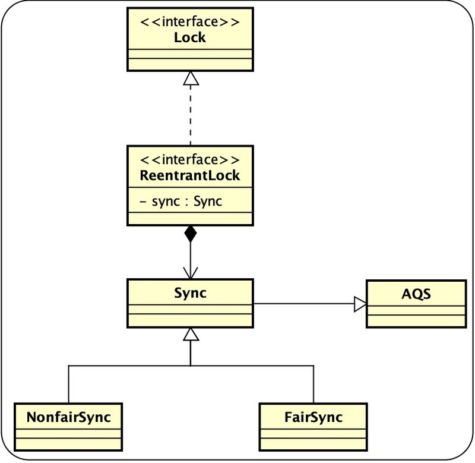
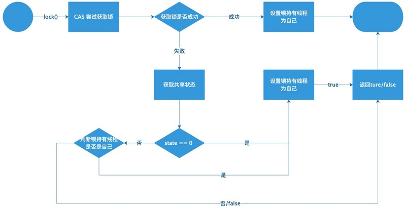
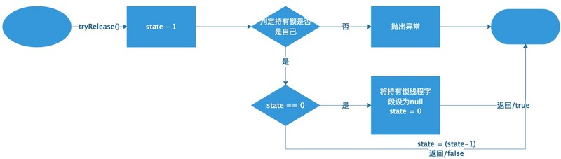

可重入锁ReentrantLock的实现原理以及源码分析。
什么是重入锁
可重入锁 ReentrantLock ，顾名思义，支持重新进入的锁，其表示该锁能支持一个线程对资源的重复加锁。
Java API 描述
|
|
ReentrantLock还提供了公平锁和非公平锁的选择， 其构造方法接受一个公平参数（默认是非公平方式），当传入ture时表示公平锁， 否则为非公平锁。其两者的主要区别在于公平锁获取锁是有顺序的。但是其效率往往没有非公平锁的效率高，在多线程的访问时往往表现很低的吞吐量（即速度慢，常常急慢）。

源码分析
我们先来看一段代码
|
|
这一段代码相信学过Java的同学都非常熟悉了，今天我们就以此为入口一步一步的带你深入其底层世界。
共享状态的获取（锁的获取）
lock()方法
|
|
ReentrantLock 的lock 方法， sync 为ReentrantLock的一个内部类，其继承了AbstractQueuedSynchronizer（AQS）, 他有两个子类公平锁FairSync 和非公平锁NonfairSync
ReentrantLock 中其中大部分的功能的实现都是委托给内部类Sync实现的，在Sync 中定义了abstract void lock() 留给子类去实现， 默认实现了final boolean nonfairTryAcquire(int acquires) 方法，可以看出其为非公平锁默认实现方式，下面我讲下给看下非公平锁lock方法。
NonfairSync.lock()
|
|
首先就尝试获取同步状态（体现非公平锁上来就插队）如果成功则将持有锁线程设置为自己，失败则走AQS中的acquire方法。
AQS.acquire(int arg)
|
|
这里AQS中的源码我就不再过多的讲解了（无非就是尝试获取同步状态成功直接返回，失败加入同步队列等待被唤醒），主要来将留给子类实现的tryAcquire(arg)方法。
如有对AQS不明白的请看文章头中列出的几篇文章过一下或者锁搜引擎中锁搜下。
Nonfairync.tryAcquire(int acquires)
|
|
ReentrantLock中非公平锁tryAcquire(int acquires)的实现，具体调用其父类Sync中默认实现的（上面已经提过）。
Sync.nonfairTryAcquire(int acquires)
|
|
主要逻辑：
- 首先判断同步状态 state == 0 ?，
- 如果state == 0 则说明该锁处于空闲状态，直接通过CAS设置同步状态,成功将持有锁线程设置为自己返回ture，
- 如果state !=0 判断锁的持有者是否是自己，是则说明可重入将state 值加1 返回ture,
- 否则返回false.
来张图加深下理解

注：此图只是体现了RenntrantLock中的状态，其中涉及到AQS中的状态流转没有在这体现。
锁的释放
锁的释放逻辑就比较简单
ReentrantLock.unlock()
|
|
同样在ReentrantLock.unlock()方法中将具体释放逻辑委托给了内部类Sync来实现, 在这Sync 同样没有去实现release(1)而是使用其父类AQS的默认实现。
AQS.release(1)
|
|
AQS释放锁的逻辑比较简单，同样就不解释了(无非就是释放锁，唤醒后继节点)具体来看下需要自类实现的tryRelease(arg) 释放共享状态的方法。
Sync.tryRelease(int releases)
|
|
释放共享状态（锁）的逻辑比较简单，主要是将共享状态的值减去releases，减后共享状态值为0表示释放锁成功将持有锁线程设置为null 返回 ture。

四、总结
最后我们来对ReentrantLock加锁和释放锁做个简单总结，ReentrantLock 是一个可重入锁提供了两种实现方式公平锁和非公平锁。
非公平锁获取锁流程：
1: 首先不管三七二一就来个 CAS 尝试获取锁。
2: 成功则皆大欢喜。
3: 失败，再次获取下共享状态（万一这会有人释放了尼）判断是否为0
4: 如果为0 则说明锁空闲，再次CAS获取锁成功将持有锁线程设置为自己并返回ture
5:不为0，判断持有者是否是自己、是自己表明可重入state + 1 返回ture 否则返回false（就去同步队列中排队去）。
非公平锁释放锁流程
很简单state - 1 = 0 则释放成功否则失败。